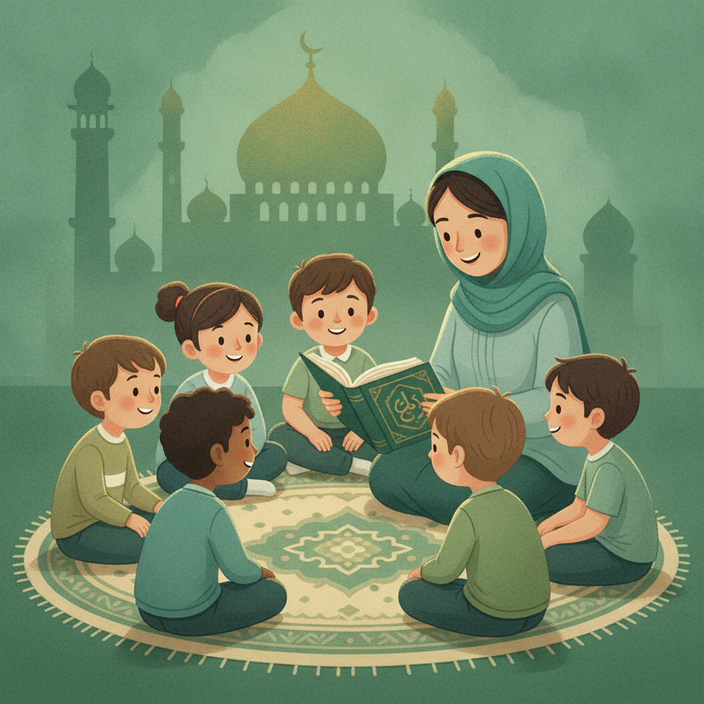
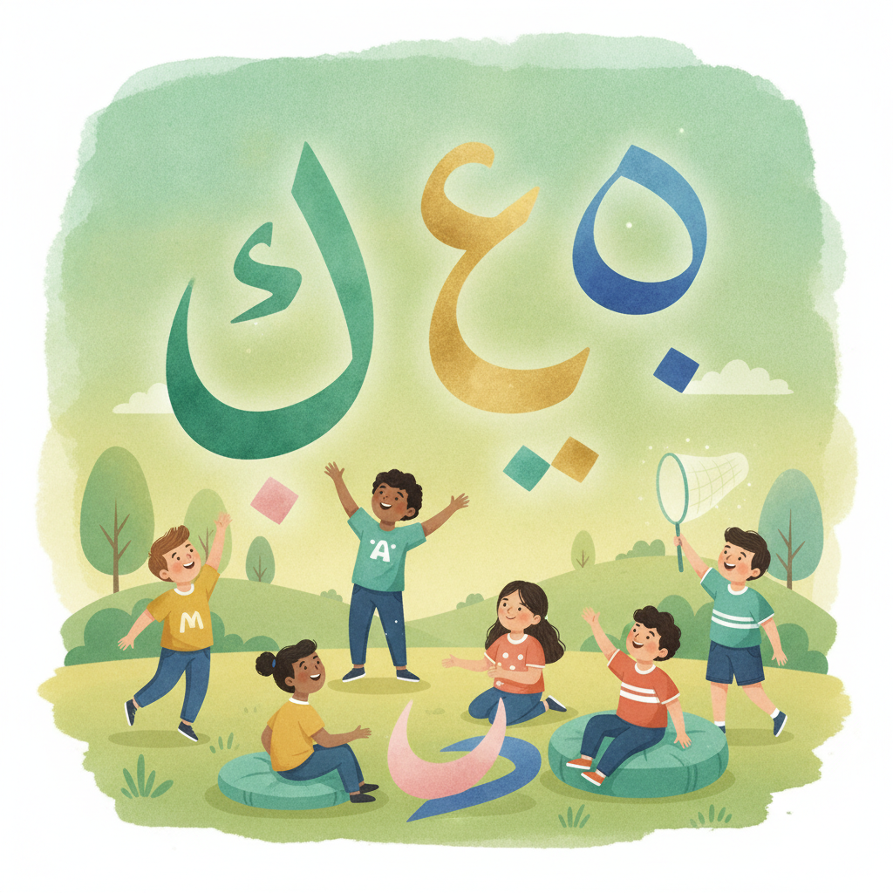

Cycle 1
6 – 8 ans
Deux parcours complémentaires : l'enseignement de l'islam et l'enseignement de la langue arabe, ouverts à tous.
Année scolaire 2026-2027Unité éducative et pédagogique
Responsables : El Hassan KADDOURI et Youssef NAJIH
Contact : enseignement.elne@gmail.com

Manuels scolaires par cycle (Coran, Aqîda, Fiqh, Sîra, Adab) — naviguez directement vers le manuel élève de chaque année. Les cycles non encore fabriqués proposent leur référentiel pédagogique.
Remplissez le formulaire d'inscription, l'équipe pédagogique vous recontacte pour confirmer le cycle adapté.
Remplir le formulaire d'inscription
Ouvert à tout public, sans prérequis religieux : applications interactives pour apprendre à lire et écrire l'arabe.
Apprendre l'arabe en jouant : reconnaissance des lettres, jeux interactifs pour les débutants.
Ouvrir l'application →Entretien oral et 5 livrets projetés pour placer chaque élève dans le bon groupe de niveau. Utilisable en classe sans connexion.
Le programme de chaque année : compétences, vocabulaire, grammaire et dialogues.
D'autres niveaux et outils interactifs viendront compléter ce parcours de langue arabe.